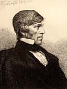
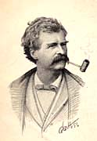

|
|
Home | Corson
Collection | Biography | Works | Image
Collection | Recent Publications | Portraits | Correspondence | Forthcoming
Events | E-texts | Contact
|  |
General Online
Criticism and Commentary
|
|

|
The following articles and essays deal with Scott's work as a
whole or with a number of individual works. They offer a general
overview of his literary achievement, discuss his sources and reception,
or focus on particular themes or aspects of his fiction and verse.
For articles and essays dealing with individual works by
Scott, click here. For articles
and essays dealing with Scott's influence on or reception by individual
figures, click here.
- Historical
Essays and Criticism
- Scholarly Articles
- Other Criticism and Commentary
1. Historical
Essays and Criticism
The emergence of digitisation programmes like Google
Book Search means that a good deal of historical criticism
and commentary on Scott is now available in scanned form. The
Walter Scott Digital Archive does not have the resources to identify
and to list this material. The texts listed below are all freely
published as Web documents.
- Thomas
Carlyle on Sir Walter Scott, 1838 - Carlyle's review of
Lockhart's Memoirs of the Life of Sir Walter Scott, Bart.,
Vols. 1-VI, originally printed in the London and Westminster
Review, no. 12. The page forms part of the Internet
Modern History Sourcebook
- 'The
Position of Sir Walter Scott' by G.K. Chesterton - From The
Literature Network, this chapter from Chesterton's Twelve
Types: A Collection of Biographies (1902) salutes Scott's
qualities of 'spiritual adventurousness' and 'eloquence' and
suggests that 'an appreciation of Scott might be made almost
a test of decadence'.
- 'Walter
Scott' by Ralph Waldo Emerson - From RWE.org, an
online edition of Emerson's Collected Works, this
is the text of an address given at a celebration by the Massachusetts
Historical Society of the Centenary of Scott's birth, Augut
15, 1871.
- 'Sir
Walter Scott' by T.F. Henderson - Critical analysis with
extensive bibliography from The Cambridge History of English
and American Literature (1907-21), vol. XII.
- 'The
Poems of Sir Walter Scott' by Andrew Lang - From World
Wide School, an analysis of Scott's verse extracted from
Lang's Essays in Little (1891).
- Sir
Walter Scott as an Empire-Builder' by Rev. Alexander MacMillan -
From The Empire
Club of Canada, a speech made by a Toronto clergyman to
the Empire Club on April 21, 1910. It highlights Scott's contribution
to the British Empire in uniting the Scottish nation, bringing
England and Scotland closer together, and giving the Empire
a 'pure' literature.
Back to top
2.
Scholarly Articles from Refereed Journals
Many scholarly journals are now available online
in full-text format on a subscription-only basis. Users accessing
the Internet from an academic site may well find that their institution
permits access to a good deal of recent-Scott related critical
material. This site can only list articles freely available to
all web users.
- '"Wizards
of the West"?: How Americans Respond to Sir Walter Scott,
the "Wizard of the North"' by Barbara Buchenau -
From the James
Fenimore Cooper Society site, this essay was originally
published in James Fenimore Cooper: His Country and His
Art, 11. It discusses the creative response to Scott of
James Fenimore Cooper, Lydia Maria Child, and Catharine Maria
Sedgwick as part of a process of American literary self-definition.
For other essays on Scott and Cooper, click here.
Barbara Buchenau is Assistant Professor of American
Studies at Göttingen University.
- 'Walter
Scott and the 'Common' Novel, 1808-1819' by Peter Garside -
Published in Cardiff
Corvey, 3 (September 1999), this essay aims to show
that Scott was more in tune with contemporary fictional trends,
especially in the years leading up to Waverley (1814),
than his critically aloof stance might suggest. Peter Garside
is Professor of Bibliography and Textual Studies at the University
of Edinburgh and was the founding Chair of the Centre
for Editorial & Intertextual Research at Cardiff University.
Among many Scott-related publications, he has edited The
Black Dwarf (1993), Guy
Mannering (1999), and Waverley (2007)
for the Edinburgh Edition of the Waverley Novels, and The
Visionary for University College Cardiff Press (1984).
He is currently principal investigator on Illustrating
Scott, a project to locate and catalogue all illustrations
to the Waverley Novels that appeared in print form in Britain
between the publication of Waverley and the
end of the nineteenth century.
- 'Walter
Scott, Politeness, and Patriotism' by Andrew Lincoln -
Click here for
a brief précis of this article from Romanticism
and Patriotism: Nation, Empire, Bodies, Rhetoric,
the May 2006 number of the Romantic
Circles Praxis Series. Dr Lincoln, a Senior Lecturer in
the School of English
and Drama at Queen Mary College, University of London,
is author of Walter Scott and Modernity (2007).
Click here for
details of other Scott-related articles by Dr Lincoln.
- ''Magical
Realism At World's End' by Michael Valdez Moses - From Margin,
an interactive community exploring magical realism, this article
was originally published in Literary Imagination,
3 (2001). It argues that magic realism exemplifies the same
cultural logic that structures and undergirds Scott's historical
romances. Click here for
a fuller précis. Michael Moses is Associate Professor
in the Department
of English at Duke University (Durham, North Carolina).
- '"Woefully
deficient in knowledge of Costume & manners': Scott's English
Predecessors' by Frauke Reitemeier - Published in Erfurt
Electronic Studies in English, 11 (2001), this essay
focuses on the English-language historical novel before Scott.
Dr Reitemeier, a lecturer at Göttingen
University, has published the monograph Deutsch-englische
Literaturbeziehungen: der Historische Roman Sir Walter Scotts
und seine Deutschen Vorläufer (Paderborn: Schöningh,
2001).
Back to top
3. Other Criticism
and Commentary
- A
Chat with Arthur Heman - From Electric
Scotland, an interview given by Herman, the author of Scottish
Enlightenment: The Scots' Invention of the Modern World,
to Frank
R. Shaw, in which he assesses the reasons for Scott's critical
fall from grace and the prospects for a revival in his critical
and popular fortunes.
- Cross
Culture: Scott’s Influence on the American South -
Dr Tony Parker's lecture notes on Scott's impact on the Antebellum
American South, part of a course on Scotland
and the Americas, 1620-1865 at the University
of Dundee.
- Historical
Novel (British) (1814) - From the Literary
Encyclopedia, an entry by Nathan Uglow (Leeds Trinity & All
Saints), detailing Scott's contribution as founding father
of the historical novel.
- The Literary
Gothic: Sir Walter Scott - From Jack G. Voller's Literary
Gothic site, this page discusses Scott's attitude to Gothic
fiction and his use of Gothic motifs. It includes links to
Scott-related pages and to e-texts of works by Scott which
comment on the Gothic ('On the Supernatural in Fictitious Composition")
or which contain Gothic elements (The
Black Dwarf, The
Bride of Lammermoor, Letters
on Demonology and Witchcraft, 'My Aunt Margaret's Mirror',
'The Tapestried Chamber', 'The
Two Drovers', 'The Fortunes of Martin Walbeck' from The
Antiquary and 'Wandering Willie's Tale' from Redgauntlet).
- Sir
Walter Scott and British Book Illustration - From The
Victorian Web, this essay by Philip V. Allingham (Lakehead
University, Ontario) discusses Scott's own attitude to illustration,
the post-1830 surge in illustrated editions of his works, and
Scott's influence on Victorian painting with particular reference
to the Pre-Raphaelites. There is a useful bibliography.
- Sir
Walter Scott & the Clan Gregor - From An
Authentic History of the Clan Gregor, this page considers
Scott's treatment of the MacGregors in The
Lady of the Lake, Rob
Roy, 'The Highland
Widow', and 'The
Two Drovers'.
Back to top
Back to index
Last updated: 25-Nov-2011
© Edinburgh University Library
|
|